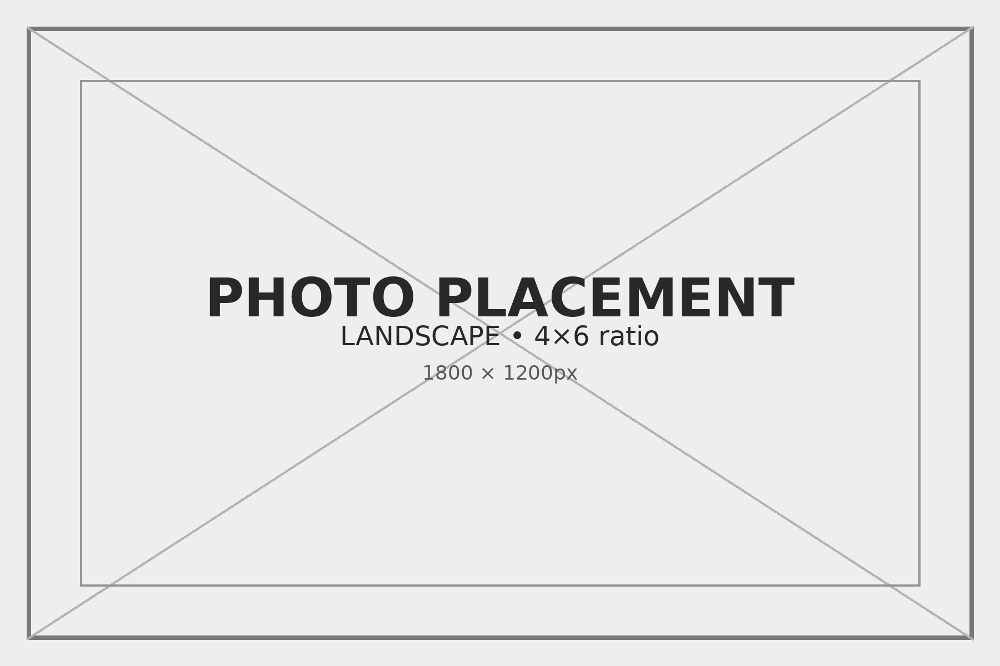
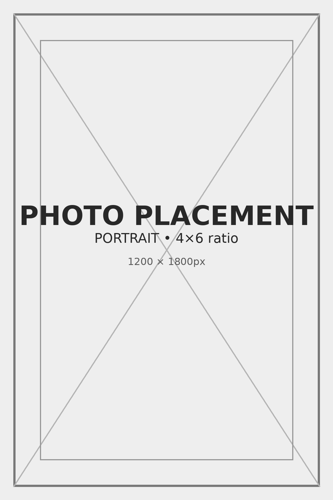

Design Thinking
Design Thinking
How I work when the problem is fuzzy.

This page is deliberately more diagrammatic. The process matters more than glossy outputs.
“Design thinking” is one of those phrases that got damaged by overuse. In the wrong hands it becomes a workshop costume: sticky notes, warm language, no consequences. That has never interested me.
What I mean by it is simpler and harsher. When the problem is fuzzy, you need a disciplined way to reduce ambiguity without lying about it. You need to know where incentives are bent, where constraints are real, where users get stuck, and what can be tested before the team disappears into theater.
This process is not a school assignment. It is a method for making complexity navigable enough that a group can move, learn, and keep its footing.
Start with incentives, not ideas
Ideas are usually downstream of incentives. Before discussing solutions, I want to know who benefits, who absorbs the cost, who can stall the work, and who has to live with the outcome after the presentation is over.
Incentive map placeholder.
Stakeholder tension view placeholder.
Map stakeholders and constraints
Most teams under-document constraints because they feel limiting. In reality, constraints are what make the problem real. Budget, compliance, labor, timing, politics, technical debt, customer expectation: these are not interruptions to the process. They are the process.
Identify the red routes
The red routes are the flows that cannot fail without damaging trust, economics, or adoption. Find those first. If a team cannot name its red routes, it will spend too much time polishing safe edges and not enough time fixing the critical path.
Prototype the smallest useful truth
I try to prototype the smallest thing that reveals whether the underlying logic holds. Not the prettiest version. The most revealing one. A flow. A service script. A taxonomy. A crude interface. The point is to learn what the system resists.

Prototype placeholder for a critical user flow or service handoff.
System artifact placeholder for the smallest useful truth.
Test what breaks under pressure
I care less about whether a concept works in ideal conditions than whether it survives contact with real incentives, imperfect users, handoffs, and operating limits. Pressure-testing is where the fiction burns off.
Align on success criteria
Before scale, define what success means in language that can survive a meeting with finance, operators, designers, and leadership. If every function uses a different definition of success, the project will look healthy right up until it becomes political.